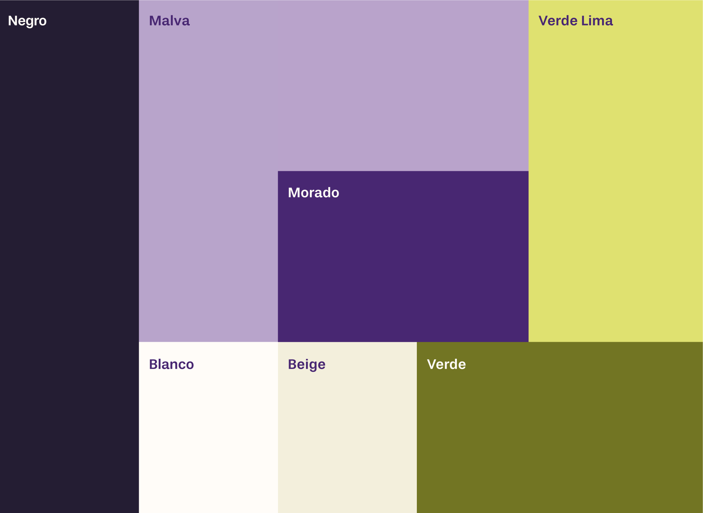
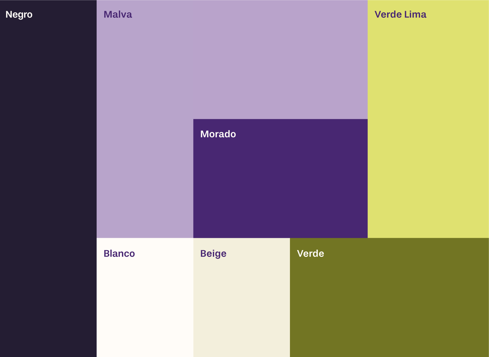

Lyra
Trabajo de fin de Grado. Diseño Multimedia y Gráfico. UDIT 2025
Este proyecto se centra en el diseño y desarrollo de una aplicación móvil de organización y planificación personal dirigida a profesionales y estudiantes del ámbito creativo y disciplinas relacionadas, cuyo valor diferencial es la customización eficaz.
Lyra surge de la necesidad de herramientas específicas que se adapten a las particularidades del sector, caracterizado por proyectos dinámicos, plazos ajustados y procesos creativos no lineales. Basado en una investigación de usuario previa, esta herramienta permite al creativo elegir la combinación de funciones y estética que mejor funcionen para su planificación diaria.
Todas estas opciones enmarcadas en una interfaz intuitiva y organizada, enfocada a alcanzar un equilibrio entre la customización y la efectividad, de manera que el usuario pueda centrar su atención y energía en cumplir con sus objetivos de forma equilibrada, reduciendo sus niveles de estrés y potenciando su creatividad.
Lyra está diseñada para acompañar en el día a día de los creativos, pero no solo organiza, sino que también guía e inspira. Su identidad visual cercana y cuidada es una extensión de esa filosofía. Cada decisión de diseño responde a un sistema planteado para conectar con la comunidad creativa de manera efectiva.
En definitiva, Lyra refleja la posibilidad de diseñar con empatía y propósito. El proyecto no solo ofrece una solución concreta, sino que también plantea una forma diferente de abordar la organización en profesiones creativas. En lugar de asumir que debemos adaptarnos a sistemas rígidos, hay que defender que es la herramienta la que debe adaptarse a nuestros ritmos, necesidades y formas de trabajar. El camino recorrido ha sido tan valioso como el resultado final, y me ha permitido consolidar herramientas, metodología y desarrollar una visión de diseño más madura, consciente y conectada con las personas.
 
